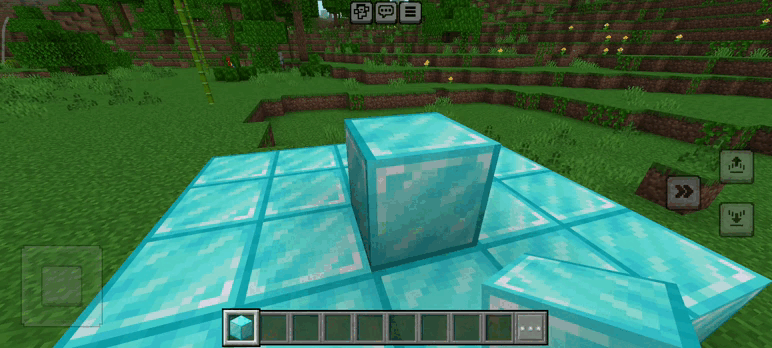
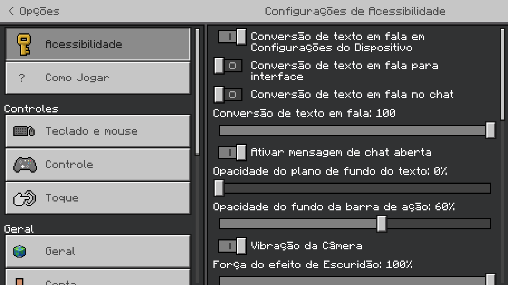

Validação
Histórico de Revisão
| Data | Versão | Descrição | Autor(es) |
|---|---|---|---|
| 08/09/2024 | 0.1 | Criação do documento e adição dos requisitos funcionais | Samara Letícia |
| 09/09/2024 | 0.2 | Adição RF54 a RF61 | Carlos Eduardo Rodrigues |
Introdução
Validação é o processo de submeter os requisitos à aprovação externa da equipe de software, verificando se atendem às necessidades dos stakeholders e evitando custos de correções.
Metodologia
Após levantarmos os requisitos, testamos e validamos cada um em diferentes ambientes do jogo.
RF01 - O usuário deve ser capaz de criar, entrar e gerenciar uma conta no Minecraft.

RF02 - O usuário deve ser capaz de se locomover utilizando o teclado.

RF03 - O usuário deve ser capaz de interagir com o mundo utilizando o mouse.

RF04 - Os recursos devem ser armazenados no inventário do usuário.

RF05 - O jogo deve possuir um dicionário com a explicação de todos os itens descobertos pelo usuário.
RF06 - O usuário deve precisar de uma mesa de trabalho para fabricar ferramentas eficientes.

RF7 - O jogo deve permitir que, através de minérios, o usuário crie novas ferramentas.
RF08 - O jogo deve oferecer diferentes tipos de alimentos para evitar que o personagem do usuário morra de fome.
RF09 - No modo hardcore, o usuário deve ter apenas uma vida, tornando o jogo mais desafiador e definitivo.
RF10 - No modo hardcore, após a morte, o usuário deve ser capaz de entrar apenas no modo espectador, sem interagir com o mundo.
RF11 - No modo hardcore, o jogo deve ser definido automaticamente na dificuldade mais alta e não pode ser alterado.

RF12 - No modo hardcore, os comandos de cheats devem estar desabilitados para garantir a integridade do desafio.

RF13 - Deve existir um modo de jogo onde o jogador pode exercitar a sua criatividade
RF14 - No modo criativo, o usuário deve ser capaz de sobrevoar rapidamente pelo mapa para facilitar as criações.

RF15 - O usuário deve ser capaz de colocar e quebrar blocos com apenas um comando no modo criativo.

RF16 - O usuário deve ter acesso a todos os itens do jogo no modo criativo.
RF17 - O usuário não deve precisar se preocupar com vida ou barra de fome no modo criativo, focando apenas em criar.

RF18 - Mobs hostis devem ignorar a presença do usuário no modo criativo.
RF19 - No modo criativo, usuário deve ser capaz de alterar o clima e a hora do dia conforme necessário para suas criações.

RF20 - Deve haver um sistema de chat para comunicação entre os jogadores, com suporte a comandos especiais.
RF21 - Jogos multiplayer devem permitir a criação e personalização de diversos modos de jogo, como construção, sobrevivência e PvP.
RF22 - Jogos multiplayer devem fornecer um sistema de votação justo e intuitivo durante competições para escolher as melhores construções ou desempenhos.

RF23 - Em Jogos multiplayer deve ser possível a criação e agendamento de eventos e competições especiais para os jogadores.
RF24 - O jogador dever ser capaz de colocar alguns blocos na hotbar.
RF25 - O jogador deve ser capaz de compartilhar o seu mapa com outro jogador.

RF26 - Deve existir um modo de jogo onde o jogador pode morrer (sobrevivência)
RF27 - Com exceção dos modos Criativo e Espectador, o jogador deve ter uma quantidade limitada de vida

RF28 - O jogador deve ser capaz de criar ferramentas

RF29 - O jogador deve ser capaz de atacar os inimigos
RF30 - Com exceção do modo hardcore, o jogador deve ser capaz de escolher a dificuldade do jogo
RF31 - O mundo deve ser gerado com diversos biomas

RF32 - O jogador deve ser capaz de melhorar o material dos seus itens
RF33 - O jogador deve ser capaz de encantar os seus itens
RF34 - Quando um inimigo morrer ele deve deixar um drop

RF35 - O jogador deve ter uma barra de fome
RF36 - Cada dimensão deve ter diferentes inimigos

RF37 - Devem existir inimigos de diferentes dificuldades

RF38 - O jogo deve apresentar um sistema de conquistas
RF39 - O jogador deve poder acessar o sistema de conquistas a qualquer momento

RF40 - O jogador deve ser capaz de personalizar o seu personagem

RF41 - O jogo deve possuir chefes
RF42 - Deve haver blocos decorativos para expandir as opções de construção e paisagismo.

RF43 - Deve haver ruínas, cavernas, montanhas e masmorras subterrâneas, com desafios e recompensas para que os jogadores realizem explorações.

RF44 - Deve haver armaduras para os jogadores e seus animais de combate.

RF45 - Deve haver armas de dano em área para facilitar combates enfrentando múltiplos inimigos de uma só vez
RF46 - Os biomas do Nether, devem possuir desafios e recompensas únicas para incentivar a exploração do submundo.
RF47 - Deve haver mobs pacíficos com profissões

RF48 - Os jogadores devem ser capazes de personalizar os seus mobs de estimação.
RF49 - Deve haver um sistema de crafting automático, que permita aos jogadores automatizar processos.
RF50 - Deve haver diferentes tipos de minérios e recursos
RF51 - Deve haver diferentes tipos de mobs de animais.
RF52 - Deve haver eventos e desafios temporários com recompensas exclusivas

RF53 - O jogador deve ser capaz de criar novos mundos no minecraft

RF54 - Deve haver uma interface intuitiva

RF55 - Deve haver opções de acessibilidade

RF56 - Deve haver dicas contextuais

RF57 - Deve haver opções de legenda

RF58 - Deve haver opção de narração

RF59 - Deve haver opção de altocontraste

RF60 - Deve haver temas e pacotes de recursos